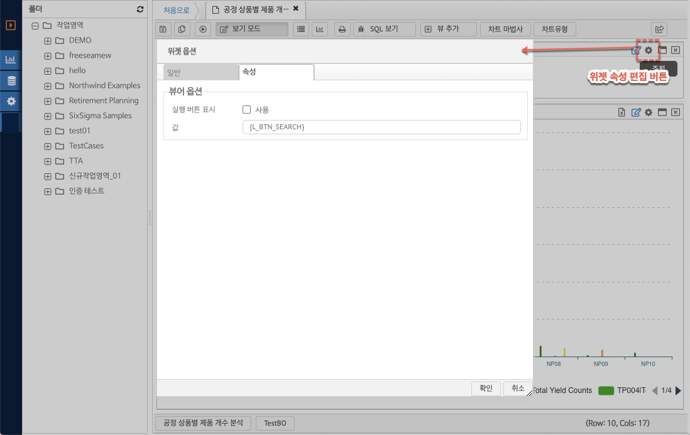
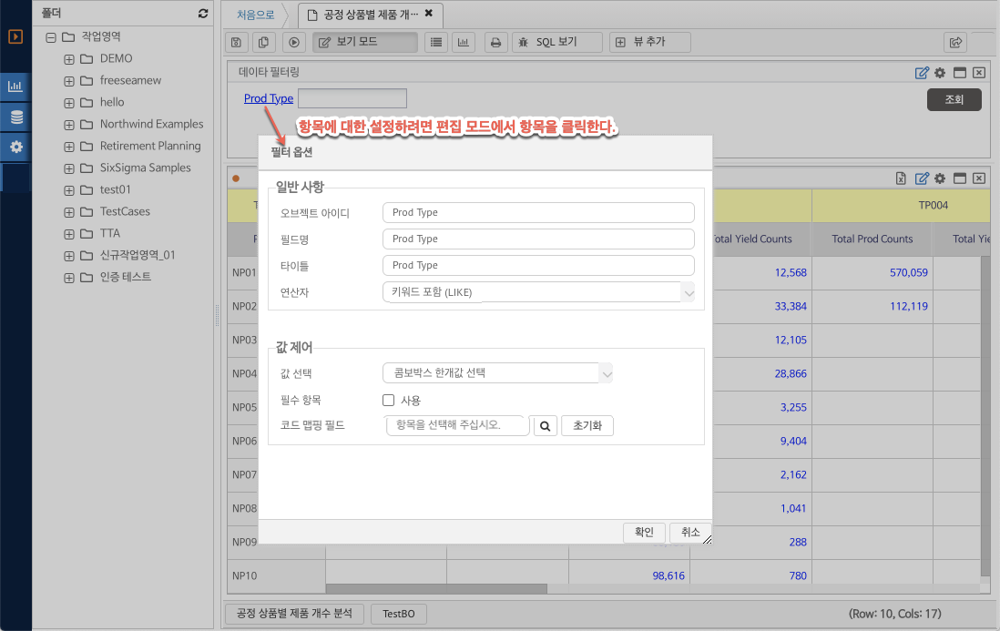
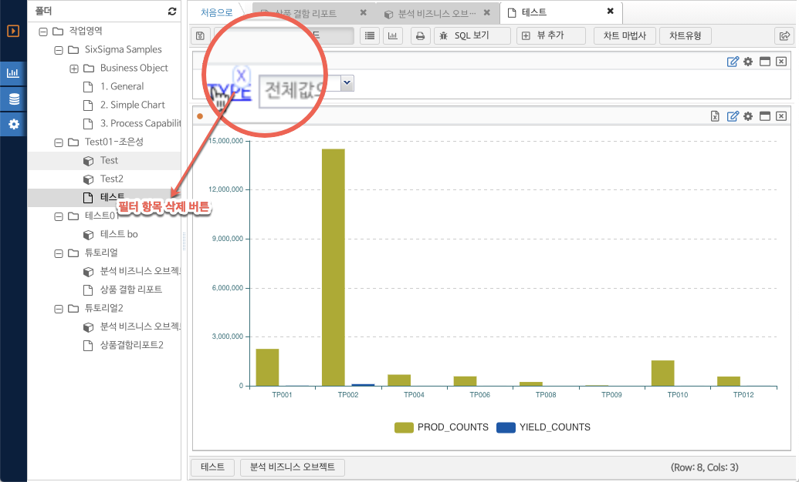

네비게이션
7.6. 필터 위젯 사용하기
필터 위젯
필터 위젯을 통해 사용자가 결과 시트 위젯의 범위를 지정할 수 있는 필터 UI 를 구성할 수 있다. 리포트 툴바의 뷰 추가 를 클릭 하고 드랍 다운 메뉴 에서 필터 추가 버튼을 클릭한다. 필터의 옵션에 대한 속성 변경 윈도우가 나타난다.
(그림 : 필터 위젯 추가하기)
필터 위젯 속성 변경
신규 필터 위젯 추가 혹은 필터 위젯의 위젯 속성 편집 버튼을 클릭 하면 옵션 변경 윈도우가 표시된다.
뷰어 옵션 : 필터 위젯의 보기 옵션을 설정 한다.
-. 실행 버튼 표시 : 필터 위젯에 조회 버튼을 표시할지의 여부를 지정한다.
-. 값 : 실행 버튼의 텍스트 값을 입력 한다. {L_BTN_SEARCH} 는 언어별로 자동으로 값을 지정하며 한글은 "조회" 로 표현된다.

(그림 : 위젯 속성 편집 하기)
필터 위젯에 항목 추가하기
(그림 : 필터 피벗을 통한 필터 항목 추가 하기)
1. 필터 위젯 툴바에서 피벗 버튼을 클릭한다.
2. 피벗 정보 팝업 화면에서 필터링 할 컬럼을 드래그 한다.
3. 항목을 필터 위젯에 드랍한다.
필터 항목의 수정
필터 위젯의 각 항목을 수정하려면 리포트를 편집 모드로 전환한 후 필터의 라벨 링크를 클릭 한다.

(그림 : 필터 항목 옵션 설정)
일반 사항 :
-. 오브젝트 아이디 : 시스템에서 사용하는 키값을 의미한다.
-. 필드명 : 현재 필드의 비즈니스 오브젝트 필드에 대한 이름이 표시된다. (읽기 전용)
-. 타이틀 : 필드 라벨로 표시할 내용을 입력한다.
-. 연산자 : 필터의 값에 대한 데이터베이스 연산자를 지정한다.
값 제어:
-. 값선택 : 값 선택 방법, 컨트롤 옵션을 선택한다.
텍스트 입력 : 텍스트를 직접 입력 한다.
콤보박스 한개값 선택 : 값 목록을 콤보 박스에 표시하며 사용자가 값을 선택할 수 있도록 한다.
-. 필수항목 : 사용자가 값을 입력하지 않은 경우 경고하고 리포트를 실행하지 않는다.
-. 코드 맵핑 필드 : 코드맵핑에서 값 - 코드 맵핑 정보를 읽어와서 콤보 박스에 표시한다. 초기화 버튼을 클릭하면 선택된 내용이 초기화 된다.
필터 위젯 항목 삭제하기
필터 항목을 삭제하려면 편집 모드 전환 후 필터의 타이틀에 마우스 오버시 삭제 아이콘이 활성화 된다. 해당 삭제 아이콘 클릭시 필터가 위젯에서 삭제 된다.
